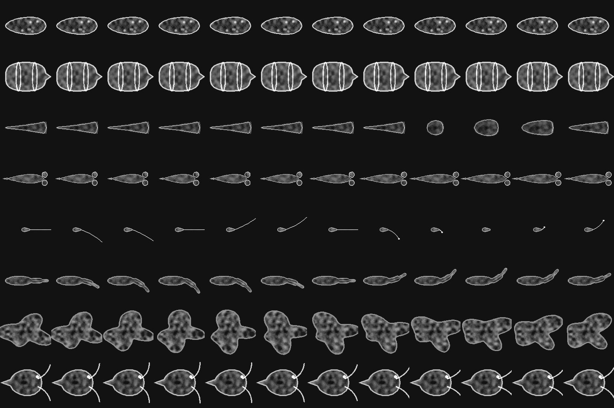
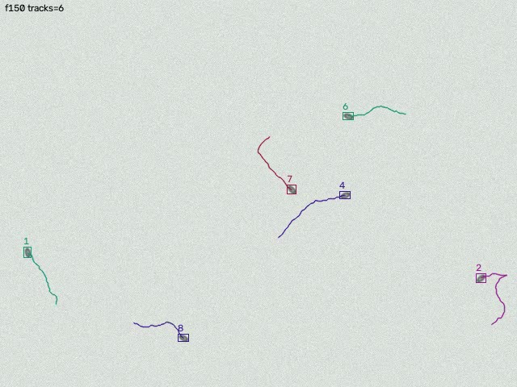
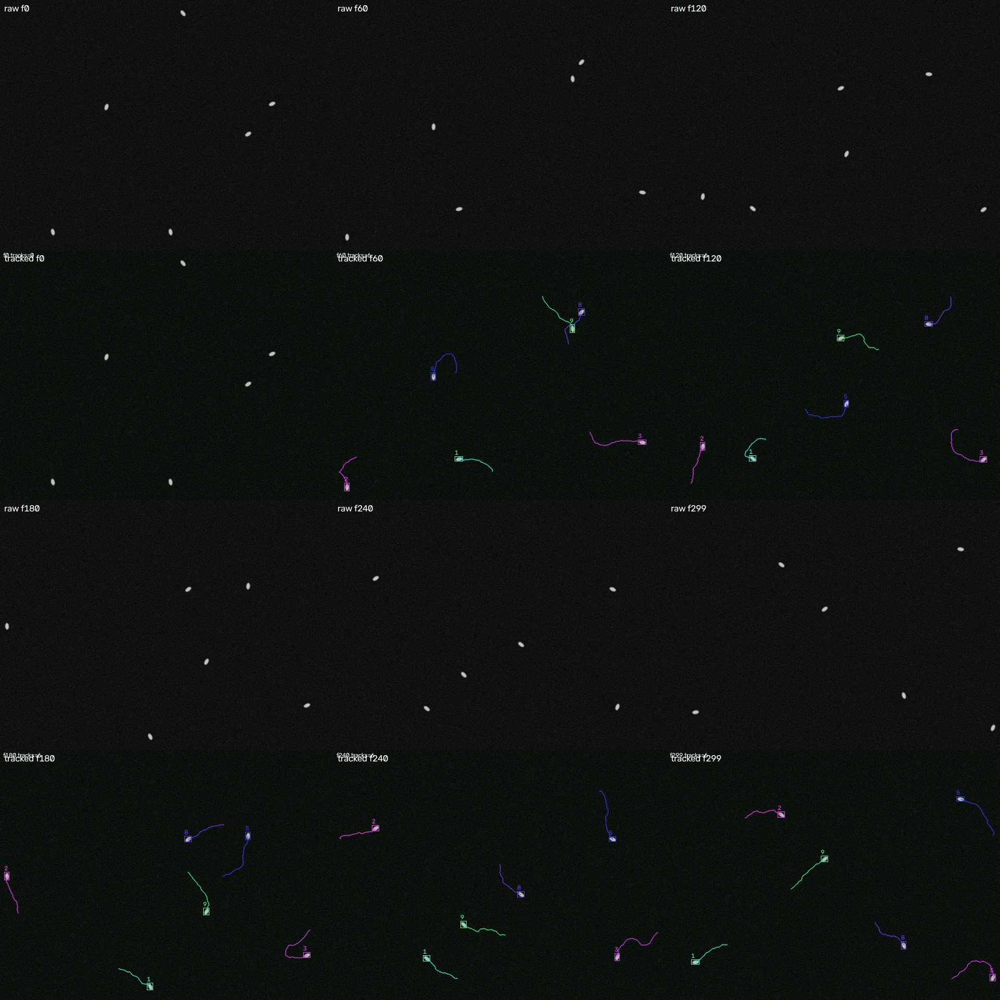
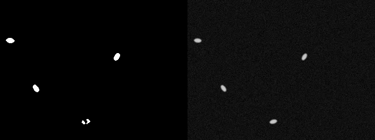
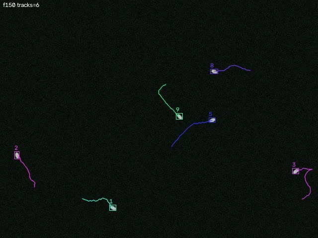

Predator and prey at a fifth of a millimetre, filmed and tracked automatically from a jar of pond water. Low magnification on a global-shutter sensor, every swimmer tracked in software, only the focus axis motorized.

Following a swimmer with a motorized stage means closing a control loop around a plant that includes the water. Every stage acceleration sloshes the chamber, the organism rides the slosh, and the controller chases its own disturbance on top of mechanical ringing. Doable, but it becomes the whole project.
Instead: run low magnification on a global-shutter sensor, detect and track every organism in software, and crop a follow-window around the one you care about. Zero lag, multiple targets at once, and the predator entering frame is free. The stage stays manual. The only servo loop is Z focus, which is slow, low-mass, has no fluid coupling, and uses image sharpness as a clean error signal.
Nothing gets bought until the gate before it is passed. Each gate is a thing you can show someone. The first two cost nothing.
| Gate | Deliverable | Unlocks | Status |
|---|---|---|---|
| G0 · Culture | A jar of local pond water with one boiled rice or wheat grain, alive for 10 days, visible swimmers. | Nothing. The precondition for everything. | in progress sample collected 2026-10-25, Bedford TX |
| G1 · Tracker on the TOMLOV | Real organisms under the owned TOMLOV TM3K-3D, backlit, top light off. track.py produces a tracks video with stable IDs, a CSV, and a follow clip worth watching. | Nothing yet. | next |
| G2 · Resolution ceiling | Three clips where something clearly happened but the species can't be told. | Used trinocular compound scope, then Pi 5 + global-shutter camera + 0.5x reducer. | — |
| G3 · One hour tracked | Unattended 60 fps hour, at least 20 tracks longer than 5 s. | Z stepper (NEMA 11 + TMC2209). | — |
| G4 · Autofocus holds | Swimming Paramecium at 10x held 60 s, sharpness-vs-time plot. | Event detection work. | — |
| G5 · First unattended capture | A 48 h run files a predator/prey clip nobody watched happen. | Tier 2 camera, focal-sweep 3D, holography side rig. | — |
What the tracker is being tested against before there is a culture to film. synth.py renders seeded swimmers with a ground-truth CSV; track.py runs MOG2 background subtraction, morphology, contours, a constant-velocity Kalman filter per track and greedy nearest-neighbour assignment, then writes the overlay, the CSV and a follow crop. Six swimmers, 640×480, 300 frames at 30 fps.




--birth-dist of a live track is a fragment, never a birth. Regression test keeps it fixed.The point is to exercise detection, assignment, track lifecycle and the output files against known ground truth. Each swimmer is a blob with a heading that random-walks and a speed that stays roughly constant. There is no behaviour in it.
| Quantity | Value | Note |
|---|---|---|
| Background | 18 grey + Gaussian noise σ 6 | Fresh noise every frame. Sets the floor MOG2 has to reject. |
| Swimmer body | ellipse 6 × 3.3 px, blur σ 0.8 | Long axis along the heading. Darkfield: 200 on 18. Brightfield: 95 rim, 165 core, on 225. |
| Speed | 3 px/frame ± 30 % | Fixed per swimmer for the clip. 90 px/s at 30 fps. |
| Turning | heading += N(0, 0.25 rad) per frame | Produces the wandering trails. No spiral, no run-and-tumble. |
| Walls | reflect at a 12 px margin | Nothing leaves the frame, so coverage can be asserted near 100 %. |
| Determinism | numpy Generator(seed) | Same seed, byte-identical truth CSV. |
--mode cross forces that case for its own test.--history frames.make demo # data/demo*.mp4, darkfield and brightfield, each with _tracks/_follow/csv/json uv run python track.py data/<clip>.mp4 --min-area 30
Sizes and speeds are what the tracker has to handle. Stentor and Vorticella contractions are faster than any frame rate here, so those will be a before and an after.
| Organism | Role | Size | Speed | Tracking note |
|---|---|---|---|---|
| Paramecium | grazer / prey | 120–300 µm | ~1 mm/s | Fast, spiral path. The benchmark target. |
| Didinium | predator of Paramecium | 80–200 µm | ~1–2 mm/s | Barrel with two cilia belts. The strike takes seconds. Headline footage. |
| Lacrymaria olor | predator | 100 µm body, neck to 1 mm | neck whips in ms | Neck extends 7×. Needs fps, not magnification. |
| Dileptus | predator | 200–500 µm | slow | Trunk sweeps and paralyzes. Easy to track. |
| Rotifers | filter feeder | 100–500 µm | variable | Often anchored; the "wheels" are a strong motion signature. |
| Stentor | filter feeder, huge | 0.5–2 mm | sessile; contracts in ~10 ms | Visible to the naked eye. Fills a 10x frame. |
| Amoeba | engulfer | 100–500 µm | µm/s | Timelapse subject. |
| Hydra | top predator | 1–10 mm | tentacles strike | Eats Daphnia. Needs a deep chamber. |
| Daphnia / copepods | big prey | 1–3 mm | jumps 10+ mm/s | Leaves frame in one jump. TOMLOV territory. |
The numbers that make this work (AR0234 sensor, 3 µm pixels, 1920 px wide, 0.5x reducer):
v1, Pi only. picamera2 at 1920×1200, 60 fps, 2 ms exposure, frames to a ring buffer. MOG2 background subtraction (darkfield makes this nearly binary), contour → centroid + area + aspect, one Kalman filter per track, assignment. Output: full-frame H.264 plus a per-track CSV and a cropped follow clip of any track that lives longer than a couple of seconds. Detect on downscaled frames, cut crops from the full-res buffer.
v2, autofocus. Variance of Laplacian on the current follow crop as the error signal; Z stepper via TMC2209 UART; PID with a deadband wider than depth of field so it doesn't hunt. Hill-climb on startup, then hold. Rate-limited to ~2 µm/s so the image never visibly breathes.
v3, meaning. Events from geometry alone: two tracks converge and one disappears is a capture; a sessile blob's area drops 80 % in one frame is a Stentor contraction. Events trigger a 10 s pre-roll clip. Subtract the per-frame median motion of all tracks before calling anything "swimming", because the LED's convection reads as drift. Then a small YOLO fine-tune on our own crops for species labels, offline on the Mac Studio, and an ecology dashboard: who eats whom, encounter rates, speed distributions.
3D, and why tilt won't do it. Depth of field is 10–50 µm, the chamber is 150 µm, and a microscope image has no perspective, so a tilted view is the same silhouette, blurrier. The routes that work: focal sweep (ramp Z at 10–20 Hz while recording; sharpness per track per frame gives Z; free, uses the motor we already need) and lensless digital holography (bare sensor, point LED, no objective; software refocuses any plane after the fact and gives true 3D tracks of every swimmer at once; ~$60; the reconstruction is a Fresnel propagation). Light-field and stereo rejected.
Owned: TOMLOV TM3K-3D digital scope (reflected and backlit, ~10–20 µm resolution floor, HDMI/USB out; fine for Daphnia, copepods and rotifers, cannot resolve ciliate anatomy), Bambu H2S, Mac Studio. Everything below waits on its gate. Prices are October 2026 US street; untick what you have and the total updates.
--history frames. Fine for G1; v3 decides between a static-blob detector and a long-history second subtractor.The rig runs unattended on a culture jar for days, the event detector tags captures, contractions and chases, and you come back to a folder of pre-rolled 10 s clips with a track overlay. The narrative work is choosing and cutting. A week of unattended running on a healthy culture should yield more predator-prey events than a month of hand-hunting.
The one place an XY stage comes back is event mode: when a trigger fires on a target near the frame edge, a single slow open-loop stage nudge re-centres it, then the stage stops. The slosh settles before the event finishes. v3, not before.